As discussed in Section 4.1 "Random Variables" in Chapter 4 "Discrete Random Variables", a random variable is called continuous if its set of possible values contains a whole interval of decimal numbers. In this chapter we investigate such random variables.
For a discrete random variable X the probability that X assumes one of its possible values on a single trial of the experiment makes good sense. This is not the case for a continuous random variable. For example, suppose X denotes the length of time a commuter just arriving at a bus stop has to wait for the next bus. If buses run every 30 minutes without fail, then the set of possible values of X is the interval denoted , the set of all decimal numbers between 0 and 30. But although the number 7.211916 is a possible value of X, there is little or no meaning to the concept of the probability that the commuter will wait precisely 7.211916 minutes for the next bus. If anything the probability should be zero, since if we could meaningfully measure the waiting time to the nearest millionth of a minute it is practically inconceivable that we would ever get exactly 7.211916 minutes. More meaningful questions are those of the form: What is the probability that the commuter's waiting time is less than 10 minutes, or is between 5 and 10 minutes? In other words, with continuous random variables one is concerned not with the event that the variable assumes a single particular value, but with the event that the random variable assumes a value in a particular interval.
The probability distribution of a continuous random variable X is an assignment of probabilities to intervals of decimal numbers using a function , called a density functionThe function such that probabilities of a continuous random variable X are areas of regions under the graph of ., in the following way: the probability that X assumes a value in the interval is equal to the area of the region that is bounded above by the graph of the equation , bounded below by the x-axis, and bounded on the left and right by the vertical lines through a and b, as illustrated in Figure 5.1 "Probability Given as Area of a Region under a Curve".
Figure 5.1 Probability Given as Area of a Region under a Curve

This definition can be understood as a natural outgrowth of the discussion in Section 2.1.3 "Relative Frequency Histograms" in Chapter 2 "Descriptive Statistics". There we saw that if we have in view a population (or a very large sample) and make measurements with greater and greater precision, then as the bars in the relative frequency histogram become exceedingly fine their vertical sides merge and disappear, and what is left is just the curve formed by their tops, as shown in Figure 2.5 "Sample Size and Relative Frequency Histograms" in Chapter 2 "Descriptive Statistics". Moreover the total area under the curve is 1, and the proportion of the population with measurements between two numbers a and b is the area under the curve and between a and b, as shown in Figure 2.6 "A Very Fine Relative Frequency Histogram" in Chapter 2 "Descriptive Statistics". If we think of X as a measurement to infinite precision arising from the selection of any one member of the population at random, then is simply the proportion of the population with measurements between a and b, the curve in the relative frequency histogram is the density function for X, and we arrive at the definition just above.
Every density function must satisfy the following two conditions:
Because the area of a line segment is 0, the definition of the probability distribution of a continuous random variable implies that for any particular decimal number, say a, the probability that X assumes the exact value a is 0. This property implies that whether or not the endpoints of an interval are included makes no difference concerning the probability of the interval.
For any continuous random variable X:
A random variable X has the uniform distribution on the interval : the density function is if x is between 0 and 1 and for all other values of x, as shown in Figure 5.2 "Uniform Distribution on ".
Figure 5.2 Uniform Distribution on

Solution:
Figure 5.3 Probabilities from the Uniform Distribution on

A man arrives at a bus stop at a random time (that is, with no regard for the scheduled service) to catch the next bus. Buses run every 30 minutes without fail, hence the next bus will come any time during the next 30 minutes with evenly distributed probability (a uniform distribution). Find the probability that a bus will come within the next 10 minutes.
Solution:
The graph of the density function is a horizontal line above the interval from 0 to 30 and is the x-axis everywhere else. Since the total area under the curve must be 1, the height of the horizontal line is 1/30. See Figure 5.4 "Probability of Waiting At Most 10 Minutes for a Bus". The probability sought is By definition, this probability is the area of the rectangular region bounded above by the horizontal line , bounded below by the x-axis, bounded on the left by the vertical line at 0 (the y-axis), and bounded on the right by the vertical line at 10. This is the shaded region in Figure 5.4 "Probability of Waiting At Most 10 Minutes for a Bus". Its area is the base of the rectangle times its height, Thus
Figure 5.4 Probability of Waiting At Most 10 Minutes for a Bus

Most people have heard of the “bell curve.” It is the graph of a specific density function that describes the behavior of continuous random variables as different as the heights of human beings, the amount of a product in a container that was filled by a high-speed packing machine, or the velocities of molecules in a gas. The formula for contains two parameters μ and σ that can be assigned any specific numerical values, so long as σ is positive. We will not need to know the formula for , but for those who are interested it is
where and e ≈ 2.71828 is the base of the natural logarithms.
Each different choice of specific numerical values for the pair μ and σ gives a different bell curve. The value of μ determines the location of the curve, as shown in Figure 5.5 "Bell Curves with ". In each case the curve is symmetric about μ.
Figure 5.5 Bell Curves with σ = 0.25 and Different Values of μ

The value of σ determines whether the bell curve is tall and thin or short and squat, subject always to the condition that the total area under the curve be equal to 1. This is shown in Figure 5.6 "Bell Curves with ", where we have arbitrarily chosen to center the curves at μ = 6.
Figure 5.6 Bell Curves with μ = 6 and Different Values of σ

The probability distribution corresponding to the density function for the bell curve with parameters μ and σ is called the normal distributionAssignment of probabilities to a continuous random variable using a bell curve for the density function. with mean μ and standard deviation σ.
A continuous random variable whose probabilities are described by the normal distribution with mean μ and standard deviation σ is called a normally distributed random variable, or a normal random variableA continuous random variable whose probabilities are determined by a bell curve. for short, with mean μ and standard deviation σ.
Figure 5.7 "Density Function for a Normally Distributed Random Variable with Mean " shows the density function that determines the normal distribution with mean μ and standard deviation σ. We repeat an important fact about this curve:
The density curve for the normal distribution is symmetric about the mean.
Figure 5.7 Density Function for a Normally Distributed Random Variable with Mean μ and Standard Deviation σ

Heights of 25-year-old men in a certain region have mean 69.75 inches and standard deviation 2.59 inches. These heights are approximately normally distributed. Thus the height X of a randomly selected 25-year-old man is a normal random variable with mean μ = 69.75 and standard deviation σ = 2.59. Sketch a qualitatively accurate graph of the density function for X. Find the probability that a randomly selected 25-year-old man is more than 69.75 inches tall.
Solution:
The distribution of heights looks like the bell curve in Figure 5.8 "Density Function for Heights of 25-Year-Old Men". The important point is that it is centered at its mean, 69.75, and is symmetric about the mean.
Figure 5.8 Density Function for Heights of 25-Year-Old Men

Since the total area under the curve is 1, by symmetry the area to the right of 69.75 is half the total, or 0.5. But this area is precisely the probability P(X > 69.75), the probability that a randomly selected 25-year-old man is more than 69.75 inches tall.
We will learn how to compute other probabilities in the next two sections.
A continuous random variable X has a uniform distribution on the interval Sketch the graph of its density function.
A continuous random variable X has a uniform distribution on the interval Sketch the graph of its density function.
A continuous random variable X has a normal distribution with mean 100 and standard deviation 10. Sketch a qualitatively accurate graph of its density function.
A continuous random variable X has a normal distribution with mean 73 and standard deviation 2.5. Sketch a qualitatively accurate graph of its density function.
A continuous random variable X has a normal distribution with mean 73. The probability that X takes a value greater than 80 is 0.212. Use this information and the symmetry of the density function to find the probability that X takes a value less than 66. Sketch the density curve with relevant regions shaded to illustrate the computation.
A continuous random variable X has a normal distribution with mean 169. The probability that X takes a value greater than 180 is 0.17. Use this information and the symmetry of the density function to find the probability that X takes a value less than 158. Sketch the density curve with relevant regions shaded to illustrate the computation.
A continuous random variable X has a normal distribution with mean 50.5. The probability that X takes a value less than 54 is 0.76. Use this information and the symmetry of the density function to find the probability that X takes a value greater than 47. Sketch the density curve with relevant regions shaded to illustrate the computation.
A continuous random variable X has a normal distribution with mean 12.25. The probability that X takes a value less than 13 is 0.82. Use this information and the symmetry of the density function to find the probability that X takes a value greater than 11.50. Sketch the density curve with relevant regions shaded to illustrate the computation.
The figure provided shows the density curves of three normally distributed random variables XA, XB, and XC. Their standard deviations (in no particular order) are 15, 7, and 20. Use the figure to identify the values of the means , , and and standard deviations , , and of the three random variables.

The figure provided shows the density curves of three normally distributed random variables XA, XB, and XC. Their standard deviations (in no particular order) are 20, 5, and 10. Use the figure to identify the values of the means , , and and standard deviations , , and of the three random variables.

Dogberry's alarm clock is battery operated. The battery could fail with equal probability at any time of the day or night. Every day Dogberry sets his alarm for 6:30 a.m. and goes to bed at 10:00 p.m. Find the probability that when the clock battery finally dies, it will do so at the most inconvenient time, between 10:00 p.m. and 6:30 a.m.
Buses running a bus line near Desdemona's house run every 15 minutes. Without paying attention to the schedule she walks to the nearest stop to take the bus to town. Find the probability that she waits more than 10 minutes.
The amount X of orange juice in a randomly selected half-gallon container varies according to a normal distribution with mean 64 ounces and standard deviation 0.25 ounce.
The weight X of grass seed in bags marked 50 lb varies according to a normal distribution with mean 50 lb and standard deviation 1 ounce (0.0625 lb).
The graph is a horizontal line with height 1/7 from x = 5 to x = 12
The graph is a bell-shaped curve centered at 100 and extending from about 70 to 130.
0.212
0.76
, , , , ,
0.3542
A standard normal random variableThe normal random variable with mean 0 and standard deviation 1. is a normally distributed random variable with mean μ = 0 and standard deviation σ = 1. It will always be denoted by the letter Z.
The density function for a standard normal random variable is shown in Figure 5.9 "Density Curve for a Standard Normal Random Variable".
Figure 5.9 Density Curve for a Standard Normal Random Variable

To compute probabilities for Z we will not work with its density function directly but instead read probabilities out of Figure 12.2 "Cumulative Normal Probability" in Chapter 12 "Appendix". The tables are tables of cumulative probabilities; their entries are probabilities of the form The use of the tables will be explained by the following series of examples.
Find the probabilities indicated, where as always Z denotes a standard normal random variable.
Solution:
Figure 5.10 Computing Probabilities Using the Cumulative Table

Find the probabilities indicated.
Solution:
Because the events Z > 1.60 and Z ≤ 1.60 are complements, the Probability Rule for Complements implies that
Since inclusion of the endpoint makes no difference for the continuous random variable Z, , which we know how to find from the table. The number in the row with heading 1.6 and in the column with heading 0.00 is 0.9452. Thus so
Figure 5.11 "Computing a Probability for a Right Half-Line" illustrates the ideas geometrically. Since the total area under the curve is 1 and the area of the region to the left of 1.60 is (from the table) 0.9452, the area of the region to the right of 1.60 must be
Figure 5.11 Computing a Probability for a Right Half-Line

The minus sign in −1.02 makes no difference in the procedure; the table is used in exactly the same way as in part (a). The number in the intersection of the row with heading −1.0 and the column with heading 0.02 is 0.1539. This means that , hence
Find the probabilities indicated.
Solution:
Figure 5.12 "Computing a Probability for an Interval of Finite Length" illustrates the ideas involved for intervals of this type. First look up the areas in the table that correspond to the numbers 0.5 (which we think of as 0.50 to use the table) and 1.57. We obtain 0.6915 and 0.9418, respectively. From the figure it is apparent that we must take the difference of these two numbers to obtain the probability desired. In symbols,
Figure 5.12 Computing a Probability for an Interval of Finite Length

The procedure for finding the probability that Z takes a value in a finite interval whose endpoints have opposite signs is exactly the same procedure used in part (a), and is illustrated in Figure 5.13 "Computing a Probability for an Interval of Finite Length". In symbols the computation is
Figure 5.13 Computing a Probability for an Interval of Finite Length

The next example shows what to do if the value of Z that we want to look up in the table is not present there.
Find the probabilities indicated.
Solution:
We attempt to compute the probability exactly as in Note 5.20 "Example 6" by looking up the numbers 1.13 and 4.16 in the table. We obtain the value 0.8708 for the area of the region under the density curve to left of 1.13 without any problem, but when we go to look up the number 4.16 in the table, it is not there. We can see from the last row of numbers in the table that the area to the left of 4.16 must be so close to 1 that to four decimal places it rounds to 1.0000. Therefore
Similarly, here we can read directly from the table that the area under the density curve and to the left of 2.15 is 0.9842, but −5.22 is too far to the left on the number line to be in the table. We can see from the first line of the table that the area to the left of −5.22 must be so close to 0 that to four decimal places it rounds to 0.0000. Therefore
The final example of this section explains the origin of the proportions given in the Empirical Rule.
Find the probabilities indicated.
Solution:
Using the table as was done in Note 5.20 "Example 6"(b) we obtain
Since Z has mean 0 and standard deviation 1, for Z to take a value between −1 and 1 means that Z takes a value that is within one standard deviation of the mean. Our computation shows that the probability that this happens is about 0.68, the proportion given by the Empirical Rule for histograms that are mound shaped and symmetrical, like the bell curve.
Using the table in the same way,
This corresponds to the proportion 0.95 for data within two standard deviations of the mean.
Similarly,
which corresponds to the proportion 0.997 for data within three standard deviations of the mean.
Use Figure 12.2 "Cumulative Normal Probability" to find the probability indicated.
Use Figure 12.2 "Cumulative Normal Probability" to find the probability indicated.
Use Figure 12.2 "Cumulative Normal Probability" to find the probability indicated.
Use Figure 12.2 "Cumulative Normal Probability" to find the probability indicated.
Use Figure 12.2 "Cumulative Normal Probability" to find the probability indicated.
Use Figure 12.2 "Cumulative Normal Probability" to find the probability indicated.
Use Figure 12.2 "Cumulative Normal Probability" to find the first probability listed. Find the second probability without referring to the table, but using the symmetry of the standard normal density curve instead. Sketch the density curve with relevant regions shaded to illustrate the computation.
Use Figure 12.2 "Cumulative Normal Probability" to find the first probability listed. Find the second probability without referring to the table, but using the symmetry of the standard normal density curve instead. Sketch the density curve with relevant regions shaded to illustrate the computation.
The probability that a standard normal random variable Z takes a value in the union of intervals (−∞, −a] ∪ [a, ∞), which arises in applications, will be denoted P(Z ≤ −a or Z ≥ a). Use Figure 12.2 "Cumulative Normal Probability" to find the following probabilities of this type. Sketch the density curve with relevant regions shaded to illustrate the computation. Because of the symmetry of the standard normal density curve you need to use Figure 12.2 "Cumulative Normal Probability" only one time for each part.
The probability that a standard normal random variable Z takes a value in the union of intervals (−∞, −a] ∪ [a, ∞), which arises in applications, will be denoted P(Z ≤ −a or Z ≥ a). Use Figure 12.2 "Cumulative Normal Probability" to find the following probabilities of this type. Sketch the density curve with relevant regions shaded to illustrate the computation. Because of the symmetry of the standard normal density curve you need to use Figure 12.2 "Cumulative Normal Probability" only one time for each part.
If X is any normally distributed normal random variable then Figure 12.2 "Cumulative Normal Probability" can also be used to compute a probability of the form by means of the following equality.
If X is a normally distributed random variable with mean μ and standard deviation σ, then
where Z denotes a standard normal random variable. a can be any decimal number or ; b can be any decimal number or
The new endpoints and are the z-scores of a and b as defined in Section 2.4.2 in Chapter 2 "Descriptive Statistics".
Figure 5.14 "Probability for an Interval of Finite Length" illustrates the meaning of the equality geometrically: the two shaded regions, one under the density curve for X and the other under the density curve for Z, have the same area. Instead of drawing both bell curves, though, we will always draw a single generic bell-shaped curve with both an x-axis and a z-axis below it.
Figure 5.14 Probability for an Interval of Finite Length
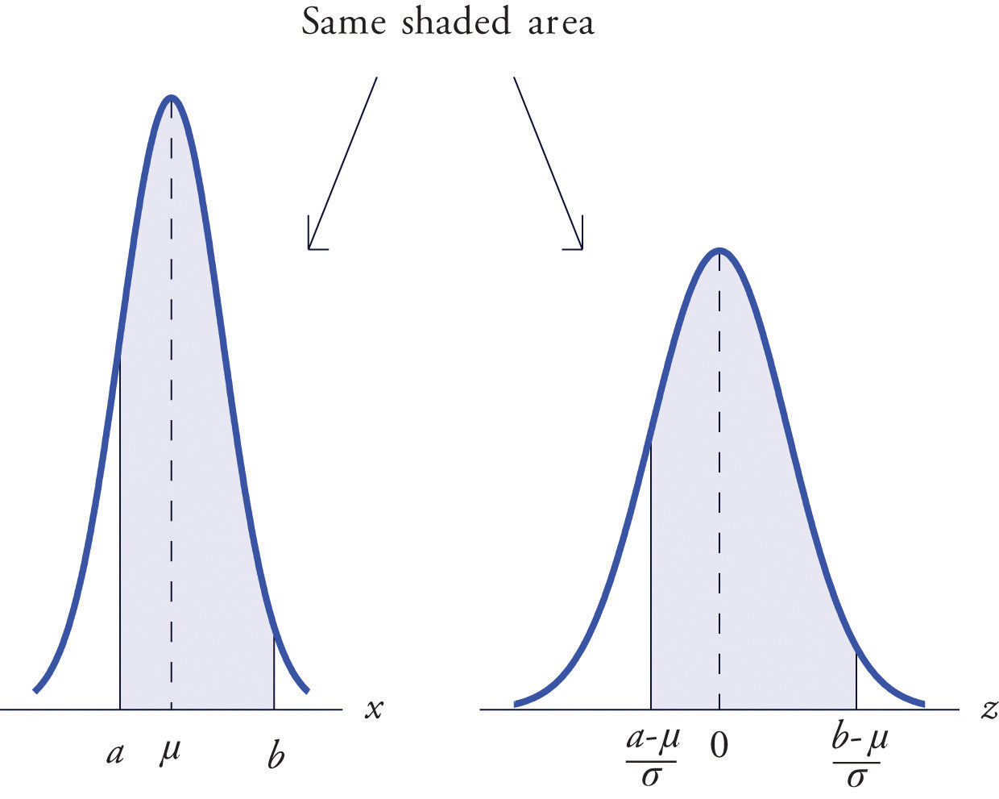Let X be a normal random variable with mean μ = 10 and standard deviation σ = 2.5. Compute the following probabilities.
Solution:
Figure 5.15 Probability Computation for a General Normal Random Variable
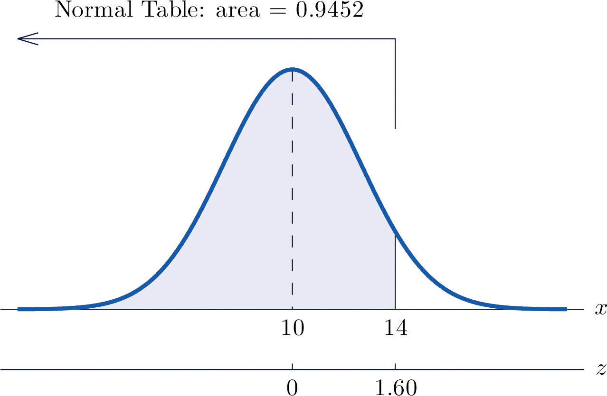Figure 5.16 Probability Computation for a General Normal Random Variable
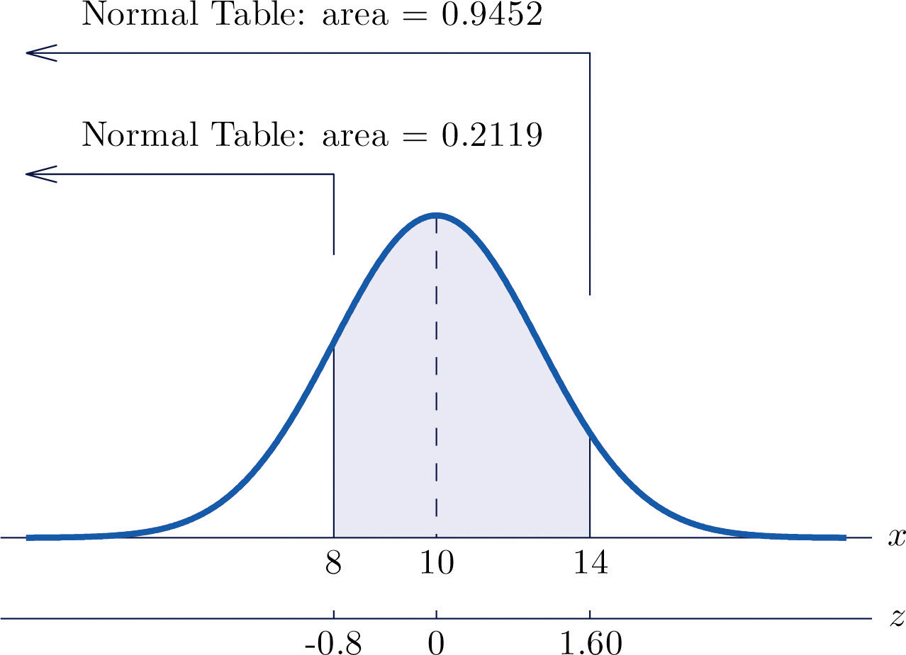The lifetimes of the tread of a certain automobile tire are normally distributed with mean 37,500 miles and standard deviation 4,500 miles. Find the probability that the tread life of a randomly selected tire will be between 30,000 and 40,000 miles.
Solution:
Let X denote the tread life of a randomly selected tire. To make the numbers easier to work with we will choose thousands of miles as the units. Thus μ = 37.5, σ = 4.5, and the problem is to compute Figure 5.17 "Probability Computation for Tire Tread Wear" illustrates the following computation:
Figure 5.17 Probability Computation for Tire Tread Wear
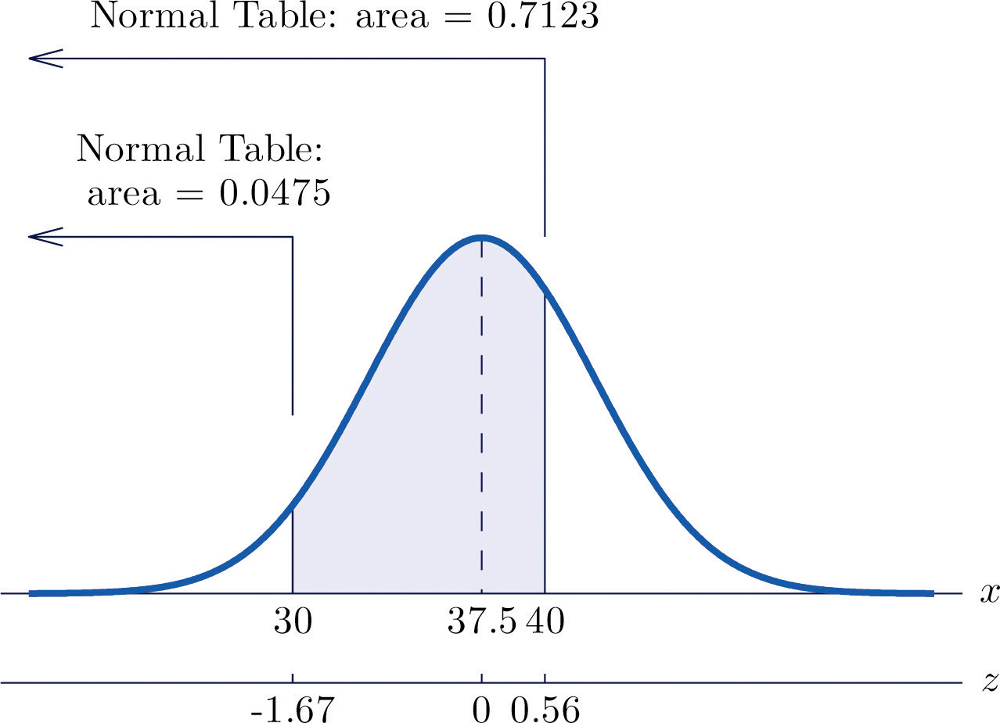Note that the two z-scores were rounded to two decimal places in order to use Figure 12.2 "Cumulative Normal Probability".
Scores on a standardized college entrance examination (CEE) are normally distributed with mean 510 and standard deviation 60. A selective university considers for admission only applicants with CEE scores over 650. Find percentage of all individuals who took the CEE who meet the university's CEE requirement for consideration for admission.
Solution:
Let X denote the score made on the CEE by a randomly selected individual. Then X is normally distributed with mean 510 and standard deviation 60. The probability that X lie in a particular interval is the same as the proportion of all exam scores that lie in that interval. Thus the solution to the problem is P(X > 650), expressed as a percentage. Figure 5.18 "Probability Computation for Exam Scores" illustrates the following computation:
Figure 5.18 Probability Computation for Exam Scores
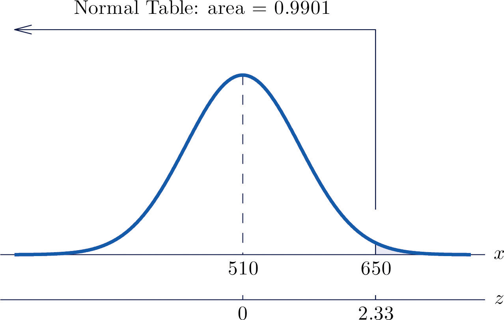The proportion of all CEE scores that exceed 650 is 0.0099, hence 0.99% or about 1% do.
X is a normally distributed random variable with mean 57 and standard deviation 6. Find the probability indicated.
X is a normally distributed random variable with mean −25 and standard deviation 4. Find the probability indicated.
X is a normally distributed random variable with mean 112 and standard deviation 15. Find the probability indicated.
X is a normally distributed random variable with mean 72 and standard deviation 22. Find the probability indicated.
X is a normally distributed random variable with mean 500 and standard deviation 25. Find the probability indicated.
X is a normally distributed random variable with mean 0 and standard deviation 0.75. Find the probability indicated.
X is a normally distributed random variable with mean 15 and standard deviation 1. Use Figure 12.2 "Cumulative Normal Probability" to find the first probability listed. Find the second probability using the symmetry of the density curve. Sketch the density curve with relevant regions shaded to illustrate the computation.
X is a normally distributed random variable with mean 100 and standard deviation 10. Use Figure 12.2 "Cumulative Normal Probability" to find the first probability listed. Find the second probability using the symmetry of the density curve. Sketch the density curve with relevant regions shaded to illustrate the computation.
X is a normally distributed random variable with mean 67 and standard deviation 13. The probability that X takes a value in the union of intervals will be denoted Use Figure 12.2 "Cumulative Normal Probability" to find the following probabilities of this type. Sketch the density curve with relevant regions shaded to illustrate the computation. Because of the symmetry of the density curve you need to use Figure 12.2 "Cumulative Normal Probability" only one time for each part.
X is a normally distributed random variable with mean 288 and standard deviation 6. The probability that X takes a value in the union of intervals will be denoted Use Figure 12.2 "Cumulative Normal Probability" to find the following probabilities of this type. Sketch the density curve with relevant regions shaded to illustrate the computation. Because of the symmetry of the density curve you need to use Figure 12.2 "Cumulative Normal Probability" only one time for each part.
The amount X of beverage in a can labeled 12 ounces is normally distributed with mean 12.1 ounces and standard deviation 0.05 ounce. A can is selected at random.
The length of gestation for swine is normally distributed with mean 114 days and standard deviation 0.75 day. Find the probability that a litter will be born within one day of the mean of 114.
The systolic blood pressure X of adults in a region is normally distributed with mean 112 mm Hg and standard deviation 15 mm Hg. A person is considered “prehypertensive” if his systolic blood pressure is between 120 and 130 mm Hg. Find the probability that the blood pressure of a randomly selected person is prehypertensive.
Heights X of adult women are normally distributed with mean 63.7 inches and standard deviation 2.71 inches. Romeo, who is 69.25 inches tall, wishes to date only women who are shorter than he but within 4 inches of his height. Find the probability that the next woman he meets will have such a height.
Heights X of adult men are normally distributed with mean 69.1 inches and standard deviation 2.92 inches. Juliet, who is 63.25 inches tall, wishes to date only men who are taller than she but within 6 inches of her height. Find the probability that the next man she meets will have such a height.
A regulation hockey puck must weigh between 5.5 and 6 ounces. The weights X of pucks made by a particular process are normally distributed with mean 5.75 ounces and standard deviation 0.11 ounce. Find the probability that a puck made by this process will meet the weight standard.
A regulation golf ball may not weigh more than 1.620 ounces. The weights X of golf balls made by a particular process are normally distributed with mean 1.361 ounces and standard deviation 0.09 ounce. Find the probability that a golf ball made by this process will meet the weight standard.
The length of time that the battery in Hippolyta's cell phone will hold enough charge to operate acceptably is normally distributed with mean 25.6 hours and standard deviation 0.32 hour. Hippolyta forgot to charge her phone yesterday, so that at the moment she first wishes to use it today it has been 26 hours 18 minutes since the phone was last fully charged. Find the probability that the phone will operate properly.
The amount of non-mortgage debt per household for households in a particular income bracket in one part of the country is normally distributed with mean $28,350 and standard deviation $3,425. Find the probability that a randomly selected such household has between $20,000 and $30,000 in non-mortgage debt.
Birth weights of full-term babies in a certain region are normally distributed with mean 7.125 lb and standard deviation 1.290 lb. Find the probability that a randomly selected newborn will weigh less than 5.5 lb, the historic definition of prematurity.
The distance from the seat back to the front of the knees of seated adult males is normally distributed with mean 23.8 inches and standard deviation 1.22 inches. The distance from the seat back to the back of the next seat forward in all seats on aircraft flown by a budget airline is 26 inches. Find the proportion of adult men flying with this airline whose knees will touch the back of the seat in front of them.
The distance from the seat to the top of the head of seated adult males is normally distributed with mean 36.5 inches and standard deviation 1.39 inches. The distance from the seat to the roof of a particular make and model car is 40.5 inches. Find the proportion of adult men who when sitting in this car will have at least one inch of headroom (distance from the top of the head to the roof).
The useful life of a particular make and type of automotive tire is normally distributed with mean 57,500 miles and standard deviation 950 miles.
A machine produces large fasteners whose length must be within 0.5 inch of 22 inches. The lengths are normally distributed with mean 22.0 inches and standard deviation 0.17 inch.
The lengths of time taken by students on an algebra proficiency exam (if not forced to stop before completing it) are normally distributed with mean 28 minutes and standard deviation 1.5 minutes.
Heights of adult men between 18 and 34 years of age are normally distributed with mean 69.1 inches and standard deviation 2.92 inches. One requirement for enlistment in the military is that men must stand between 60 and 80 inches tall.
A regulation hockey puck must weigh between 5.5 and 6 ounces. In an alternative manufacturing process the mean weight of pucks produced is 5.75 ounce. The weights of pucks have a normal distribution whose standard deviation can be decreased by increasingly stringent (and expensive) controls on the manufacturing process. Find the maximum allowable standard deviation so that at most 0.005 of all pucks will fail to meet the weight standard. (Hint: The distribution is symmetric and is centered at the middle of the interval of acceptable weights.)
The amount of gasoline X delivered by a metered pump when it registers 5 gallons is a normally distributed random variable. The standard deviation σ of X measures the precision of the pump; the smaller σ is the smaller the variation from delivery to delivery. A typical standard for pumps is that when they show that 5 gallons of fuel has been delivered the actual amount must be between 4.97 and 5.03 gallons (which corresponds to being off by at most about half a cup). Supposing that the mean of X is 5, find the largest that σ can be so that P(4.97 < X < 5.03) is 1.0000 to four decimal places when computed using Figure 12.2 "Cumulative Normal Probability", which means that the pump is sufficiently accurate. (Hint: The z-score of 5.03 will be the smallest value of Z so that Figure 12.2 "Cumulative Normal Probability" gives )
0.1830
0.4971
0.9980
0.6771
0.0359
0.089
The left tailThe region under a density curve whose area is either or for some number . of a density curve of a continuous random variable X cut off by a value of X is the region under the curve that is to the left of , as shown by the shading in Figure 5.19 "Right and Left Tails of a Distribution"(a). The right tail cut off by is defined similarly, as indicated by the shading in Figure 5.19 "Right and Left Tails of a Distribution"(b).
Figure 5.19 Right and Left Tails of a Distribution
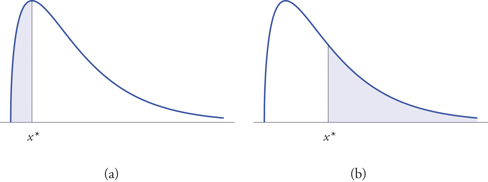The probabilities tabulated in Figure 12.2 "Cumulative Normal Probability" are areas of left tails in the standard normal distribution.
At times it is important to be able to solve the kind of problem illustrated by Figure 5.20. We have a certain specific area in mind, in this case the area 0.0125 of the shaded region in the figure, and we want to find the value of Z that produces it. This is exactly the reverse of the kind of problems encountered so far. Instead of knowing a value of Z and finding a corresponding area, we know the area and want to find In the case at hand, in the terminology of the definition just above, we wish to find the value that cuts off a left tail of area 0.0125 in the standard normal distribution.
The idea for solving such a problem is fairly simple, although sometimes its implementation can be a bit complicated. In a nutshell, one reads the cumulative probability table for Z in reverse, looking up the relevant area in the interior of the table and reading off the value of Z from the margins.
Figure 5.20 Z Value that Produces a Known Area
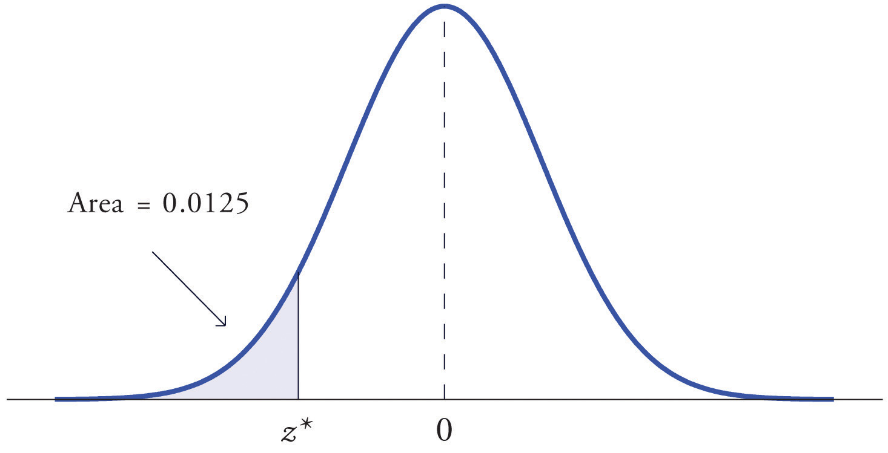Find the value of Z as determined by Figure 5.20: the value that cuts off a left tail of area 0.0125 in the standard normal distribution. In symbols, find the number such that
Solution:
The number that is known, 0.0125, is the area of a left tail, and as already mentioned the probabilities tabulated in Figure 12.2 "Cumulative Normal Probability" are areas of left tails. Thus to solve this problem we need only search in the interior of Figure 12.2 "Cumulative Normal Probability" for the number 0.0125. It lies in the row with the heading −2.2 and in the column with the heading 0.04. This means that P(Z < −2.24) = 0.0125, hence
Find the value of Z as determined by Figure 5.21: the value that cuts off a right tail of area 0.0250 in the standard normal distribution. In symbols, find the number such that
Figure 5.21 Z Value that Produces a Known Area
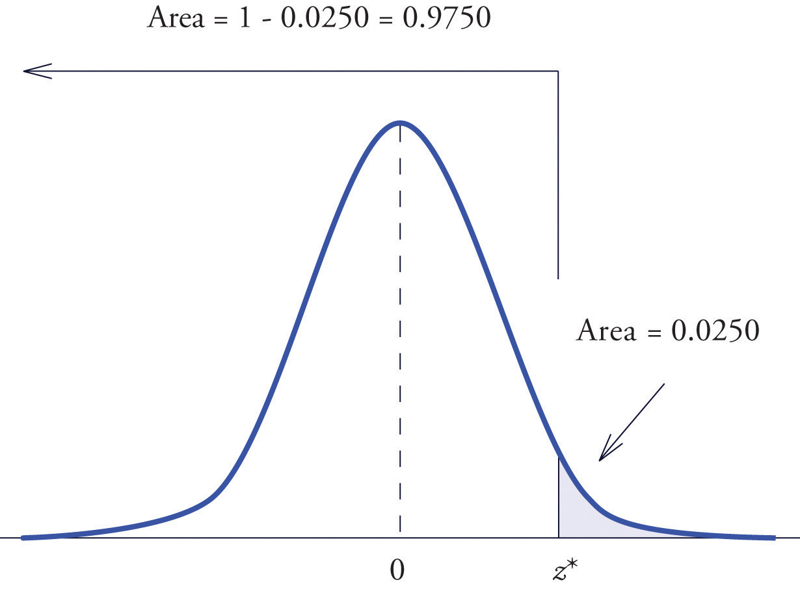Solution:
The important distinction between this example and the previous one is that here it is the area of a right tail that is known. In order to be able to use Figure 12.2 "Cumulative Normal Probability" we must first find that area of the left tail cut off by the unknown number Since the total area under the density curve is 1, that area is This is the number we look for in the interior of Figure 12.2 "Cumulative Normal Probability". It lies in the row with the heading 1.9 and in the column with the heading 0.06. Therefore
The value of the standard normal random variable Z that cuts off a right tail of area c is denoted zc. By symmetry, value of Z that cuts off a left tail of area c is See Figure 5.22 "The Numbers ".
Figure 5.22 The Numbers zc and
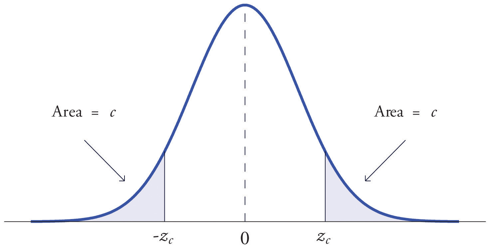The previous two examples were atypical because the areas we were looking for in the interior of Figure 12.2 "Cumulative Normal Probability" were actually there. The following example illustrates the situation that is more common.
Find and , the values of Z that cut off right and left tails of area 0.01 in the standard normal distribution.
Solution:
Since cuts off a left tail of area 0.01 and Figure 12.2 "Cumulative Normal Probability" is a table of left tails, we look for the number 0.0100 in the interior of the table. It is not there, but falls between the two numbers 0.0102 and 0.0099 in the row with heading −2.3. The number 0.0099 is closer to 0.0100 than 0.0102 is, so for the hundredths place in we use the heading of the column that contains 0.0099, namely, 0.03, and write
The answer to the second half of the problem is automatic: since , we conclude immediately that
We could just as well have solved this problem by looking for first, and it is instructive to rework the problem this way. To begin with, we must first subtract 0.01 from 1 to find the area of the left tail cut off by the unknown number See Figure 5.23 "Computation of the Number ". Then we search for the area 0.9900 in Figure 12.2 "Cumulative Normal Probability". It is not there, but falls between the numbers 0.9898 and 0.9901 in the row with heading 2.3. Since 0.9901 is closer to 0.9900 than 0.9898 is, we use the column heading above it, 0.03, to obtain the approximation Then finally
Figure 5.23 Computation of the Number
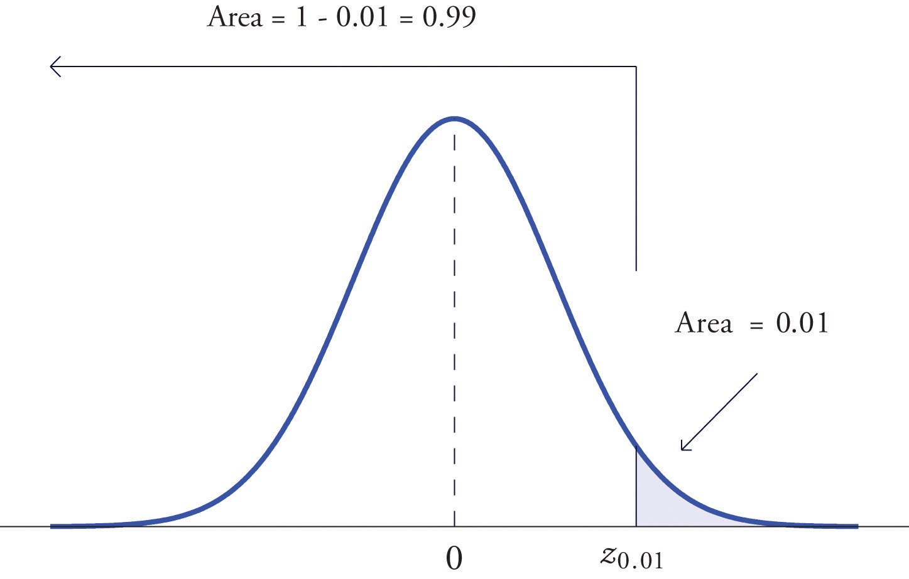The problem of finding the value of a general normally distributed random variable X that cuts off a tail of a specified area also arises. This problem may be solved in two steps.
Suppose X is a normally distributed random variable with mean μ and standard deviation σ. To find the value of X that cuts off a left or right tail of area c in the distribution of X:
is the z-score of ; compute using the destandardization formula
In short, solve the corresponding problem for the standard normal distribution, thereby obtaining the z-score of , then destandardize to obtain
Find such that , where X is a normal random variable with mean μ = 10 and standard deviation σ = 2.5.
Solution:
All the ideas for the solution are illustrated in Figure 5.24 "Tail of a Normally Distributed Random Variable". Since 0.9332 is the area of a left tail, we can find simply by looking for 0.9332 in the interior of Figure 12.2 "Cumulative Normal Probability". It is in the row and column with headings 1.5 and 0.00, hence Thus is 1.50 standard deviations above the mean, so
Figure 5.24 Tail of a Normally Distributed Random Variable
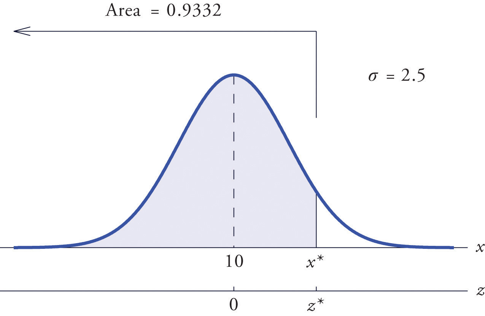Find such that , where X is a normal random variable with mean μ = 175 and standard deviation σ = 12.
Solution:
The situation is illustrated in Figure 5.25 "Tail of a Normally Distributed Random Variable". Since 0.65 is the area of a right tail, we first subtract it from 1 to obtain , the area of the complementary left tail. We find by looking for 0.3500 in the interior of Figure 12.2 "Cumulative Normal Probability". It is not present, but lies between table entries 0.3520 and 0.3483. The entry 0.3483 with row and column headings −0.3 and 0.09 is closer to 0.3500 than the other entry is, so Thus is 0.39 standard deviations below the mean, so
Figure 5.25 Tail of a Normally Distributed Random Variable
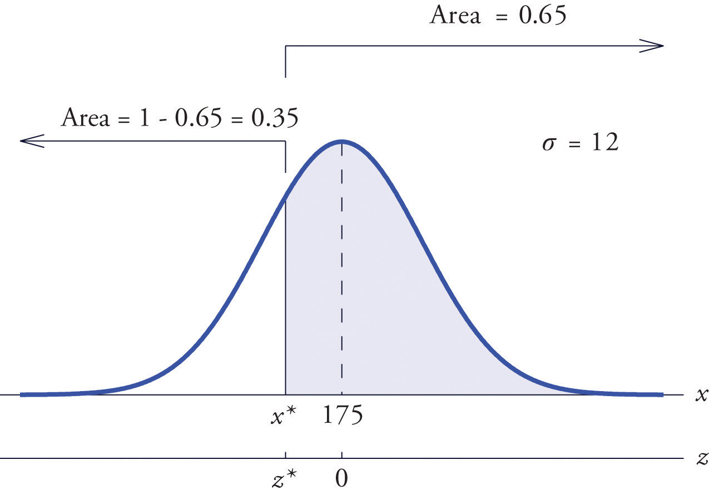Scores on a standardized college entrance examination (CEE) are normally distributed with mean 510 and standard deviation 60. A selective university decides to give serious consideration for admission to applicants whose CEE scores are in the top 5% of all CEE scores. Find the minimum score that meets this criterion for serious consideration for admission.
Solution:
Let X denote the score made on the CEE by a randomly selected individual. Then X is normally distributed with mean 510 and standard deviation 60. The probability that X lie in a particular interval is the same as the proportion of all exam scores that lie in that interval. Thus the minimum score that is in the top 5% of all CEE is the score that cuts off a right tail in the distribution of X of area 0.05 (5% expressed as a proportion). See Figure 5.26 "Tail of a Normally Distributed Random Variable".
Figure 5.26 Tail of a Normally Distributed Random Variable
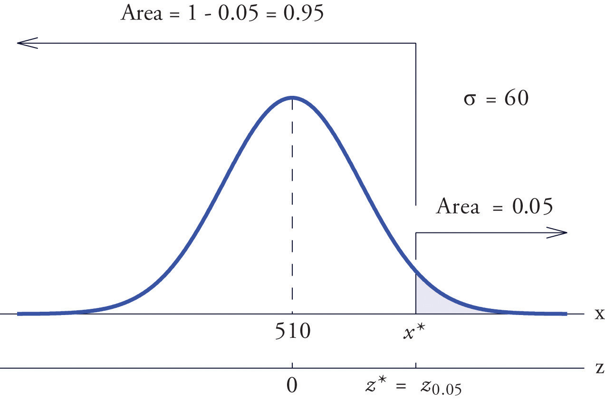Since 0.0500 is the area of a right tail, we first subtract it from 1 to obtain , the area of the complementary left tail. We find by looking for 0.9500 in the interior of Figure 12.2 "Cumulative Normal Probability". It is not present, and lies exactly half-way between the two nearest entries that are, 0.9495 and 0.9505. In the case of a tie like this, we will always average the values of Z corresponding to the two table entries, obtaining here the value Using this value, we conclude that is 1.645 standard deviations above the mean, so
All boys at a military school must run a fixed course as fast as they can as part of a physical examination. Finishing times are normally distributed with mean 29 minutes and standard deviation 2 minutes. The middle 75% of all finishing times are classified as “average.” Find the range of times that are average finishing times by this definition.
Solution:
Let X denote the finish time of a randomly selected boy. Then X is normally distributed with mean 29 and standard deviation 2. The probability that X lie in a particular interval is the same as the proportion of all finish times that lie in that interval. Thus the situation is as shown in Figure 5.27 "Distribution of Times to Run a Course". Because the area in the middle corresponding to “average” times is 0.75, the areas of the two tails add up to 1 − 0.75 = 0.25 in all. By the symmetry of the density curve each tail must have half of this total, or area 0.125 each. Thus the fastest time that is “average” has z-score , which by Figure 12.2 "Cumulative Normal Probability" is −1.15, and the slowest time that is “average” has z-score The fastest and slowest times that are still considered average are
and
Figure 5.27 Distribution of Times to Run a Course
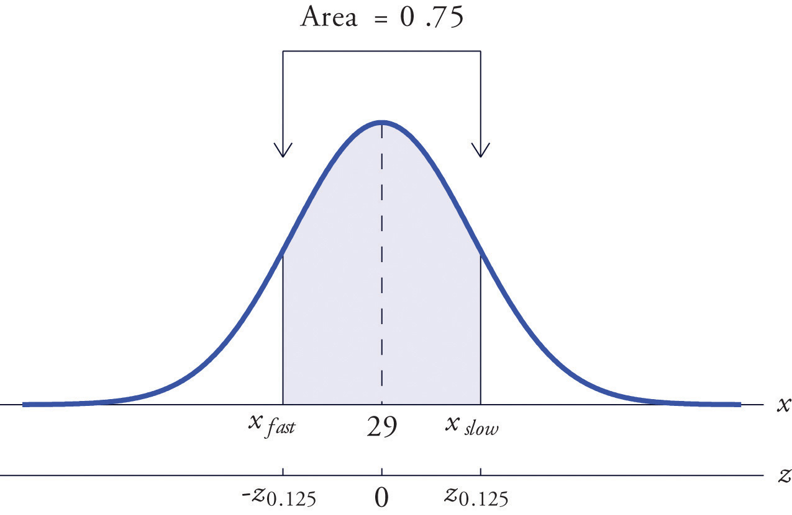A boy has an average finishing time if he runs the course with a time between 26.7 and 31.3 minutes, or equivalently between 26 minutes 42 seconds and 31 minutes 18 seconds.
Find the value of that yields the probability shown.
Find the value of that yields the probability shown.
Find the value of that yields the probability shown.
Find the value of that yields the probability shown.
Find the indicated value of Z. (It is easier to find and negate it.)
Find the indicated value of Z. (It is easier to find and negate it.)
Find the value of that yields the probability shown, where X is a normally distributed random variable X with mean 83 and standard deviation 4.
Find the value of that yields the probability shown, where X is a normally distributed random variable X with mean 54 and standard deviation 12.
X is a normally distributed random variable X with mean 15 and standard deviation 0.25. Find the values xL and xR of X that are symmetrically located with respect to the mean of X and satisfy P(xL < X < xR) = 0.80. (Hint. First solve the corresponding problem for Z.)
X is a normally distributed random variable X with mean 28 and standard deviation 3.7. Find the values xL and xR of X that are symmetrically located with respect to the mean of X and satisfy P(xL < X < xR) = 0.65. (Hint. First solve the corresponding problem for Z.)
Scores on a national exam are normally distributed with mean 382 and standard deviation 26.
Heights of women are normally distributed with mean 63.7 inches and standard deviation 2.47 inches.
The monthly amount of water used per household in a small community is normally distributed with mean 7,069 gallons and standard deviation 58 gallons. Find the three quartiles for the amount of water used.
The quantity of gasoline purchased in a single sale at a chain of filling stations in a certain region is normally distributed with mean 11.6 gallons and standard deviation 2.78 gallons. Find the three quartiles for the quantity of gasoline purchased in a single sale.
Scores on the common final exam given in a large enrollment multiple section course were normally distributed with mean 69.35 and standard deviation 12.93. The department has the rule that in order to receive an A in the course his score must be in the top 10% of all exam scores. Find the minimum exam score that meets this requirement.
The average finishing time among all high school boys in a particular track event in a certain state is 5 minutes 17 seconds. Times are normally distributed with standard deviation 12 seconds.
Tests of a new tire developed by a tire manufacturer led to an estimated mean tread life of 67,350 miles and standard deviation of 1,120 miles. The manufacturer will advertise the lifetime of the tire (for example, a “50,000 mile tire”) using the largest value for which it is expected that 98% of the tires will last at least that long. Assuming tire life is normally distributed, find that advertised value.
Tests of a new light led to an estimated mean life of 1,321 hours and standard deviation of 106 hours. The manufacturer will advertise the lifetime of the bulb using the largest value for which it is expected that 90% of the bulbs will last at least that long. Assuming bulb life is normally distributed, find that advertised value.
The weights X of eggs produced at a particular farm are normally distributed with mean 1.72 ounces and standard deviation 0.12 ounce. Eggs whose weights lie in the middle 75% of the distribution of weights of all eggs are classified as “medium.” Find the maximum and minimum weights of such eggs. (These weights are endpoints of an interval that is symmetric about the mean and in which the weights of 75% of the eggs produced at this farm lie.)
The lengths X of hardwood flooring strips are normally distributed with mean 28.9 inches and standard deviation 6.12 inches. Strips whose lengths lie in the middle 80% of the distribution of lengths of all strips are classified as “average-length strips.” Find the maximum and minimum lengths of such strips. (These lengths are endpoints of an interval that is symmetric about the mean and in which the lengths of 80% of the hardwood strips lie.)
All students in a large enrollment multiple section course take common in-class exams and a common final, and submit common homework assignments. Course grades are assigned based on students' final overall scores, which are approximately normally distributed. The department assigns a C to students whose scores constitute the middle 2/3 of all scores. If scores this semester had mean 72.5 and standard deviation 6.14, find the interval of scores that will be assigned a C.
Researchers wish to investigate the overall health of individuals with abnormally high or low levels of glucose in the blood stream. Suppose glucose levels are normally distributed with mean 96 and standard deviation 8.5 mg/d , and that “normal” is defined as the middle 90% of the population. Find the interval of normal glucose levels, that is, the interval centered at 96 that contains 90% of all glucose levels in the population.
A machine for filling 2-liter bottles of soft drink delivers an amount to each bottle that varies from bottle to bottle according to a normal distribution with standard deviation 0.002 liter and mean whatever amount the machine is set to deliver.
A nursery has observed that the mean number of days it must darken the environment of a species poinsettia plant daily in order to have it ready for market is 71 days. Suppose the lengths of such periods of darkening are normally distributed with standard deviation 2 days. Find the number of days in advance of the projected delivery dates of the plants to market that the nursery must begin the daily darkening process in order that at least 95% of the plants will be ready on time. (Poinsettias are so long-lived that once ready for market the plant remains salable indefinitely.)
15.32
7030.14, 7069, 7107.86
85.90
65,054
1.58, 1.86
66.5, 78.5